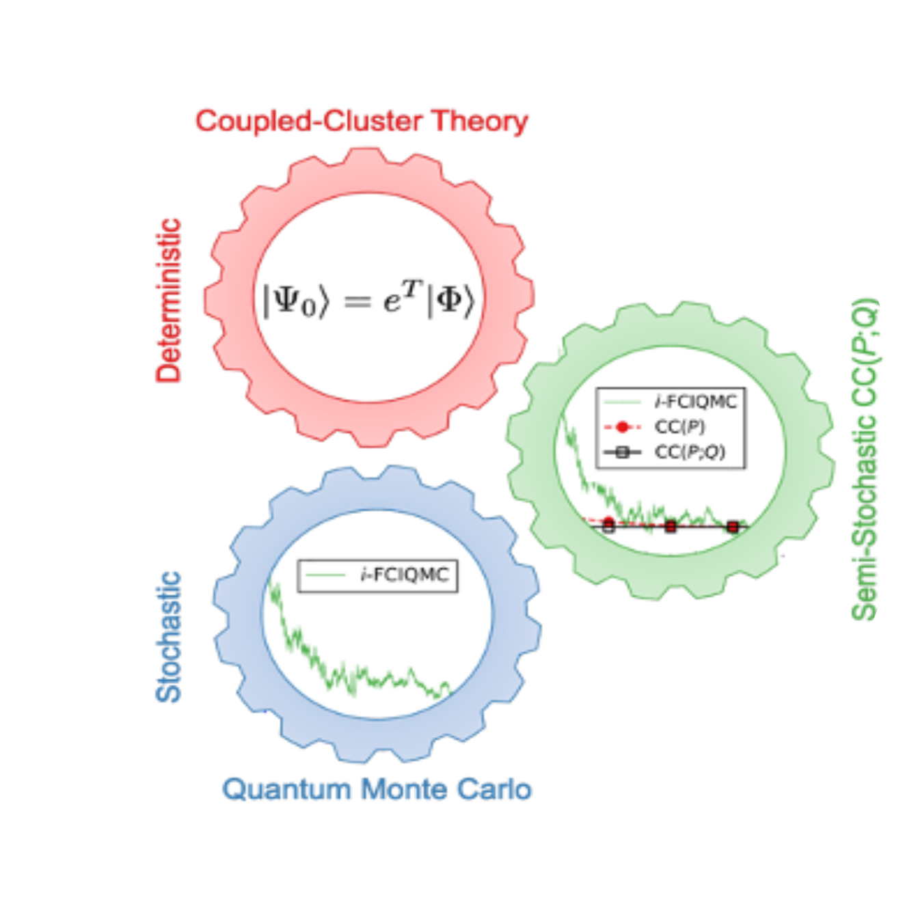
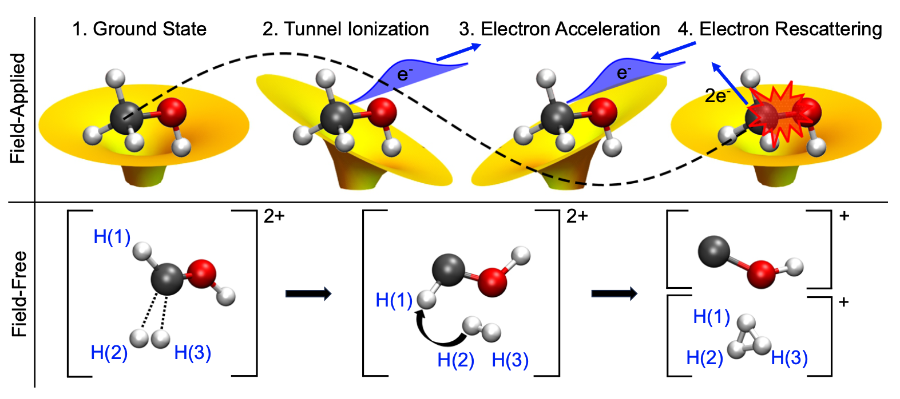
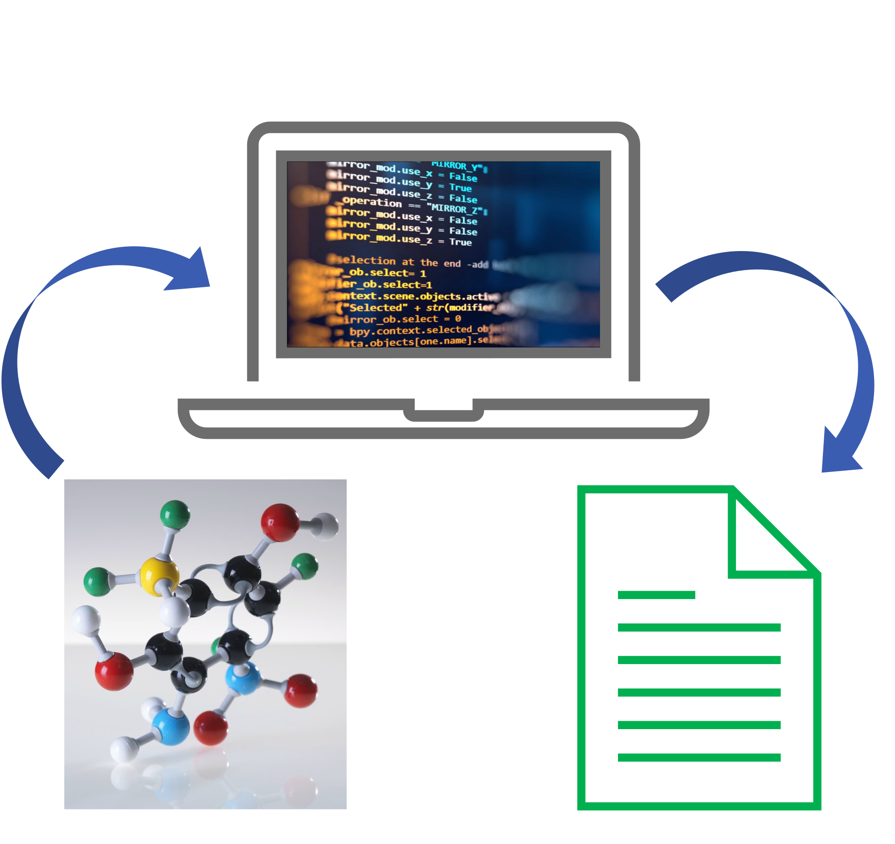
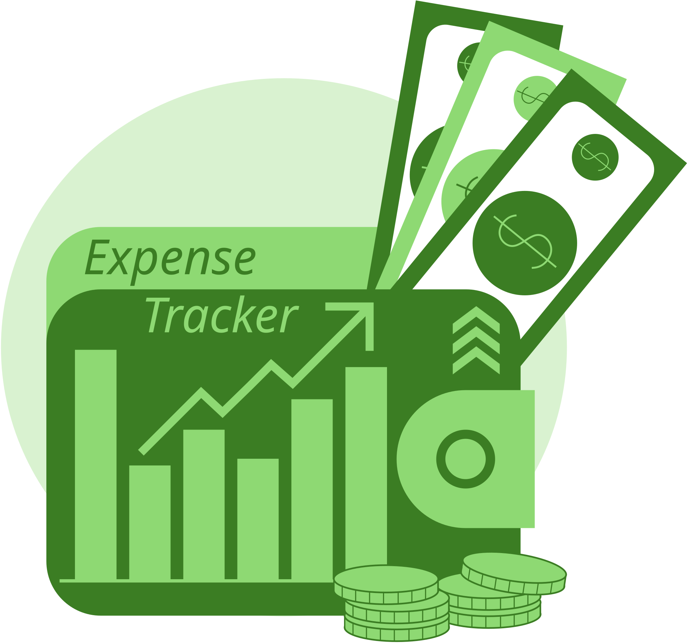
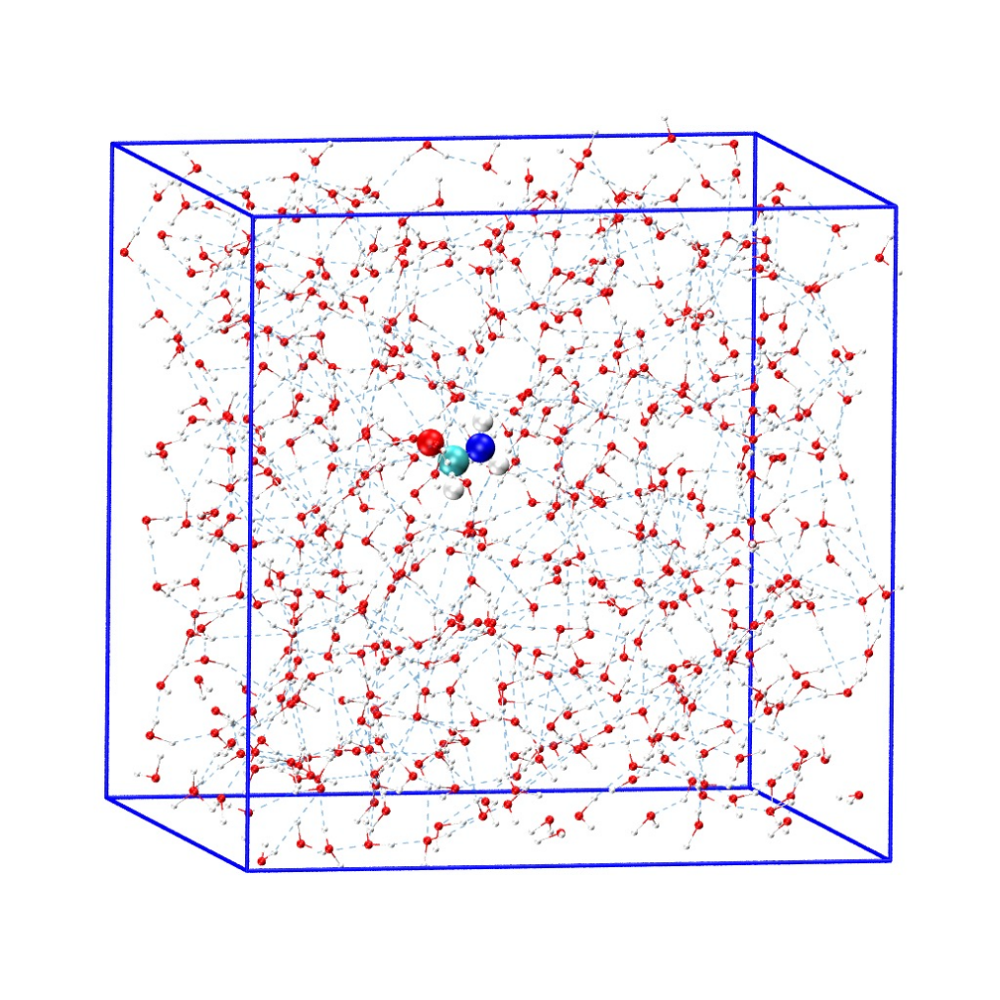
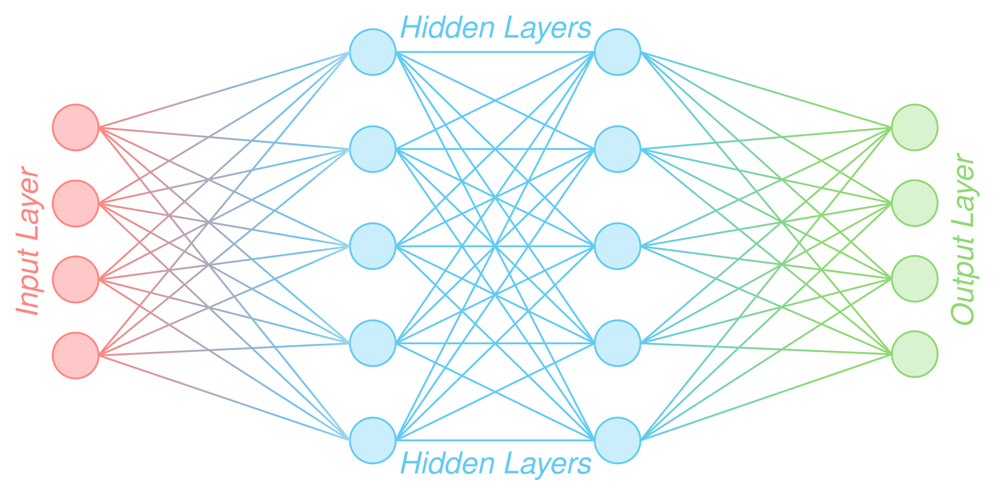

H3+ formation from methyl halogens & pseudohalogens
Combined experiments, EOM-CC calculations, and ab initio molecular dynamics to understand roaming-driven H3+ formation and its trends across CH3X species.
A selection of research and software projects. Some items are works in progress and will be expanded over time.


Combined experiments, EOM-CC calculations, and ab initio molecular dynamics to understand roaming-driven H3+ formation and its trends across CH3X species.

Scripts and utilities to extract energies, properties, and electronic-structure data from common QC outputs into clean, analysis-friendly formats.

A Python GUI app to log expenses and generate weekly/monthly summaries with plots to help monitor and optimize spending habits.

Under construction — notes, workflows, and examples as I build more experience with practical MD pipelines.

Under construction — experiments and learning notes on ML for chemistry and scientific computing.